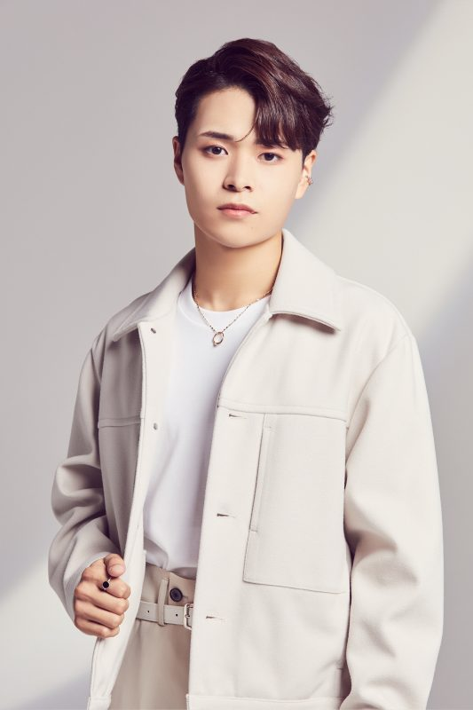
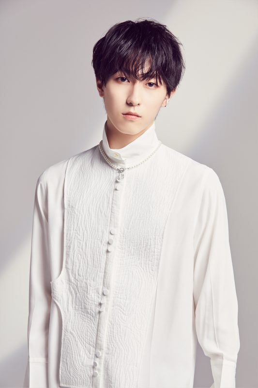

OCTPATH is a Japanese boy group with 8 members that consists of Toma, Kose Naoki, Kaiho, Ota Shunsei, Yotsuya Shinsuke, Takahashi Wataru, Kurita Kohei, and Kobori Shu. They aren't debut yet, but they will debut on February 9th, 2022. The group in under Yoshimoto Kogyo. Something that is special about this Japanese boy group is that all members are from the survival show 'Produce 101 Japan'. OCTPATH fandom color is purple.
MEMBERS
TOMA

stage name: Toma
birth name: Nakamura Toma
birthday: February 21st, 1998
birthplace: Bali, Indonesia
zodiac sign: Pisces
height: 178 cm
nationality: Indonesian
KOSE NAOKI
stage name: Kose Naoki
birth name: Kose Naoki
birthday: November 11th, 1998
birthplace: Osaka, Japan
zodiac sign: Scorpio
height: 168 cm
nationality: Japanese
KAIHO

stage name: Kaiho
birth name: Nakano Kaiho
birthday: January 24th, 1999
birthplace: Osaka, Japan
zodiac sign: Aquarius
height: 173 cm
nationality: Japanese
OTA SHUNSEI
stage name: Ota Shunsei
birth name: Ota Shunsei
birthday: Noveber 6th, 1999
birthplace: Fukuoka, Japan
zodiac sign: Scorpio
height: 168 cm
nationality: Japanese
YOTSUYA SHINSUKE

stage name: Yotsuya Shinsuke
birth name: Yotsuya Shinsuke
birthday: February 11th, 2000
birthplace: Kanagawa, Japan
zodiac sign: Aquarius
height: 176 cm
nationality: Japanese
TAKAHASHI WATARU
stage name: Takahashi Wataru
birth name: Takahashi Wataru
birthday: December 3rd, 2000
birthplace: Saitama, Japan
zodiac sign: Saggitarius
height: 171 cm
nationality: Japanese
KURITA KOHEI
stage name: Kurita Kohei
birth name: Kurita Kohei
birthday: January 27th, 2002
birthplace: Ehime, Japan
zodiac sign: Aquarius
height: 173 cm
nationality: Japanese
KOBORI SHU
stage name: Kobori Shu
birth name: Kobori Shu
birthday: February 11th, 2003
birthplace: Tokyo, Japan
zodiac sign: Aquarius
height: 171 cm
nationality: Japanese